Transformaciones Integrales
Luis A. Núñez
Escuela de Física, Universidad Industrial de Santander
Bucaramanga-Colombia
| > | restart: with(inttrans); with(plots): assume(a>0, A>0): |
| 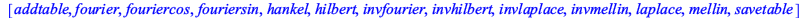 | (1) |
Defino la función Transformada de Fourier para luego utilizarla en varios ejemplos
| > | FourierCompTranf:= f-> simplify(fourier(f,t,k)/sqrt(2*Pi)); |
| 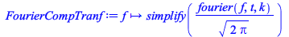 | (2) |
Fijo los parámetros
| > | T := 2; # Período
a:=T/2; # Medio período A:=1; # Amplitud N:= 10; # Número de términos en la serie de fourier |
| 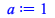 | |
| 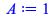 | |
| 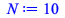 | (3) |
| > | ; |
Coeficientes reales y complejos de la transformadas de Fourier
Si f(t) es una función de variable real su transformada de Fourier es compleja
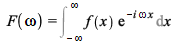 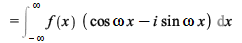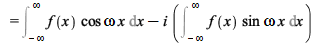.
Por lo tanto, su parte real e imaginaria serán
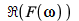 = 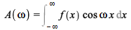, y 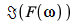 = 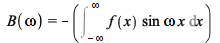.
por lo que = 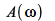será una función par
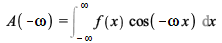 = 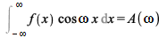.
del mismo modo 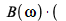la parte imaginaria pura) será impar
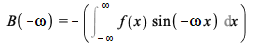 = 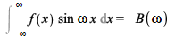.
Función escalón
Defino la función escalón
| > | fEscalon:= A*Heaviside(t +a)-A*Heaviside(t -a); |
| (2.1) |
Calculo la transformada de Fourier
| > | TFEscalon := FourierCompTranf(fEscalon); |
| 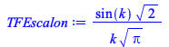 | (2.2) |
Note que la transformada de Fourier es real, porque f(x) es par
Grafico, la señal y su transformada
| > | plot(fEscalon,t=-8..8,title="Señal");
plot([Re(TFEscalon),Im(TFEscalon)],k=-16..16,color=[red,blue], title ="F(w)= A(w) + iB(w)",legend=[`A(w)`,`B(w)`]); |
| 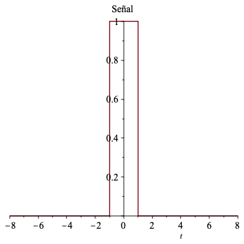 | |
| 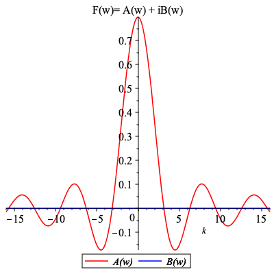 |
Note que, como sabíamos, solo tenemos coeficientes reales
Expansión en series de Fourier complejas
Que pasa si expandimos la función en término de una serie compleja de Fourier
| > | SerieFourierExp := (m,t)-> sum(C[j]*exp(-I*(n*2*Pi/T)*t),j=1..m); |
![SerieFourierExp := proc (m, t) options operator, arrow; sum(`*`(C[j], `*`(exp(`+`(`-`(`/`(`*`(`+`(`*`(2, `*`(I))), `*`(n, `*`(Pi, `*`(t)))), `*`(T))))))), j = 1 .. m) end proc](images/FourierTransf_25.gif) |
(2.1.1) |
Calculamos los coeficientes suponiendo que la función anterior es
| > | t0 := -a: t1:= a:
for n from 0 to N do C[n]:=2/T*int(fEscalon*exp(-I*(n*2*Pi/T)*t),t=t0..t1): PowerC[n]:=abs(C[n]); od: |
Pero estos coeficientes pueden ser reales o complejos
| > | CoefExp := {seq([n,C[n]], n=0..N)}; #los coeficientes
PowerCoefExp := {seq([n,PowerC[n]], n=0..N)}; # el módulo de los coeficientes |
| 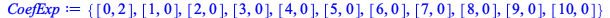 | |
| 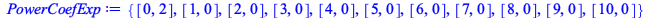 | (2.1.2) |
La función escalón solo tiene un coeficiente el C[0], el resto de coeficientes serán nulos
| > | PowerCn := [seq(plot([[n,0],[n,PowerC[n]]],thickness=9),n=0..N)]: |
Solo tendremos un elemento en el espectro de los módulos de los coeficientes
| > | display(PowerCn,title=`Espectro de módulos`, labels=["n","Mod ( C(n) )"], labeldirections= ["horizontal","vertical"]); |
 |
Al hacer el cambio de variable omega = 2*n*Pi/T podremos expandir la serie en función de las frecuencias
| > | SerieFourierExpK := (m,t)-> sum(CK[omega]*exp(-I*omega*t),omega=1..m); |
![SerieFourierExpK := proc (m, t) options operator, arrow; sum(`*`(CK[omega], `*`(exp(`+`(`-`(`*`(`+`(I), `*`(omega, `*`(t)))))))), omega = 1 .. m) end proc](images/FourierTransf_29.gif) |
(2.1.3) |
| > | omegaMax := floor(2*N*Pi/T) |
| (2.1.4) |
| > | for omega from 0 to omegaMax do
CK[omega]:=(2/Pi)*int(fEscalon*exp(-I*omega*t),t=t0..t1): PowerCK[omega] := evalf(abs(CK[omega])): od: |
Tendremos también unicamente coeficientes reales en esta expansión Para graficarlos, calculamos su parte real
| > | ImCK := [seq(plot( [[omega,0],[omega,Im(CK[omega])]],thickness=9),omega=0..omegaMax)]:
ReCK := [seq(plot( [[omega,0],[omega,Re(CK[omega])]],thickness=9),omega=0..omegaMax)]: PowCK := [seq(plot( [[omega,0],[omega, PowerCK[omega]]],thickness=9),omega=1..omegaMax)]: |
La parte real de los coeficientes será
| > | display(ReCK,title=`Espectro parte real de los coeficientes`, labels=["omega","Re ( C(omega) )"], labeldirections= ["horizontal","vertical"]); |
| 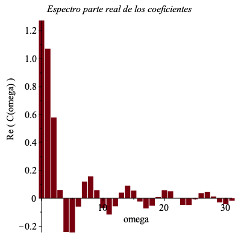 |
Nóte la riqueza de esta expansión comparada con la expansión con la expansión con la etiqueta n
Espectro de los módulos de los coeficientes
| > | display(PowCK,title=`Espectro módulo de los coeficientes`, labels=["omega","Abs ( C(omega) )"], labeldirections= ["horizontal","vertical"]); |
| 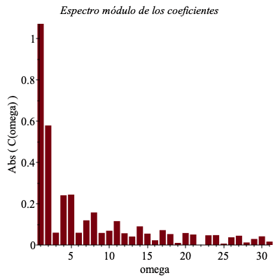 |
Función Onda cuadrada en el intervalo [ -T/2, T/2]
| > | t0:=-a: t1:=a: fOndaCuadrada1:=piecewise((t0<=t and t<0,-1),(0<=t and t<=t1,1)); |
| 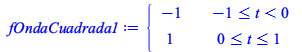 | (3.1) |
| > | plot(fOndaCuadrada1,t=-8..8,title="Señal") |
| 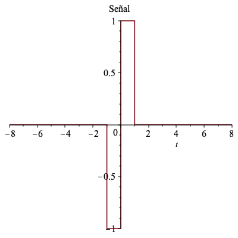 |
Se calcula la transformada de Fourier
| > | TFOndaCuadrada1 := FourierCompTranf(fOndaCuadrada1); |
| 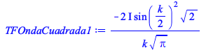 | (3.2) |
Note que la transformada de Fourier es imaginaria pura porque f(x) es impar
Grafico, la señal y la parte imaginaria de su transformada
| > | plot(fOndaCuadrada1,t=-8..8,title="Señal");
plot([Re(TFOndaCuadrada1),Im(TFOndaCuadrada1)],k=-16..16,color=[red,blue], title ="Transformada de Fourier F(w)= A(w) + iB(w)",legend=[`A(w)`,`B(w)`]); plot(abs(TFOndaCuadrada1),k=-16..16, title="Espectro de potencia"); |
| 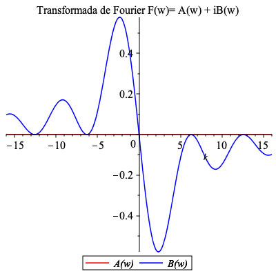 | |
| 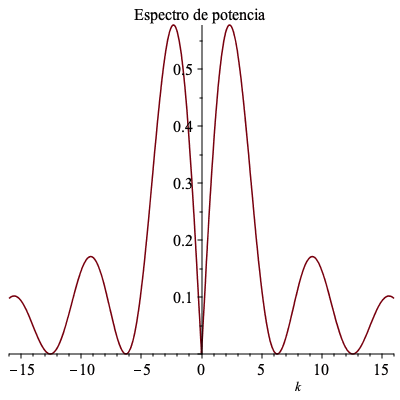 |
Note que sólo tenemos componente imaginatia pura para la transformada de fourier y la forma del espectro de potencia
Expansión en series de Fourier complejas
Que pasa si expandimos la función en término de una serie compleja de Fourier
| > | SerieFourierExp := (m,t)-> sum(C[j]*exp(-I*(n*2*Pi/T)*t),j=1..m); |
![SerieFourierExp := proc (m, t) options operator, arrow; sum(`*`(C[j], `*`(exp(`+`(`-`(`/`(`*`(`+`(`*`(2, `*`(I))), `*`(n, `*`(Pi, `*`(t)))), `*`(T))))))), j = 1 .. m) end proc](images/FourierTransf_39.gif) |
(3.1.1) |
Calculamos los coeficientes suponiendo que la función anterior es
| > | for n from 0 to N do
C[n]:=2/T*int(fOndaCuadrada1*exp(-I*(n*2*Pi/T)*t),t=t0..t1): PowerC[n]:=abs(C[n]); od: |
Pero estos coeficientes pueden ser reales o complejos
| > | CoefExp := {seq([n,C[n]], n=0..N)}; #los coeficientes
PowerCoefExp := {seq([n,PowerC[n]], n=0..N)}; # el módulo de los coeficientes |
| 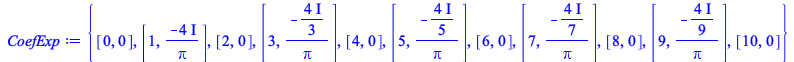 | |
| 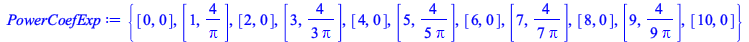 | (3.1.2) |
Solo tenemos coeficientes C[n] imaginarios puros y creamos una lista con los coeficientes
| > | ImCn := [seq(plot([[n,0],[n,Im(C[n])]],thickness=9),n=0..N)]:
PowerCn := [seq(plot([[n,0],[n,PowerC[n]]],thickness=9),n=0..N)]: |
La parte imaginaria
| > | display(ImCn,title=`Espectro parte imaginaria de los coeficientes`, labels=["n","Im ( C(n) )"], labeldirections= ["horizontal","vertical"]); |
| 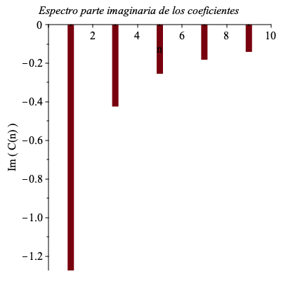 |
Espectro de los módulos de los coeficientes, claramente coincide con (el módulo) de la parte imaginaria
| > | display(PowerCn,title=`Espectro de módulos`, labels=["n","Mod ( C(n) )"], labeldirections= ["horizontal","vertical"]); |
| 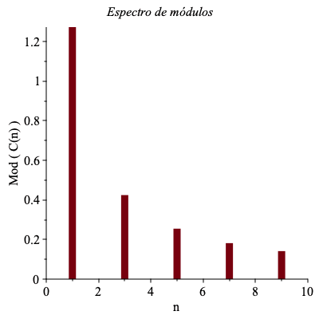 |
Note que si f(t) es impar entonces los coeficientes son imaginarios y si f(x) es par serán reales
Al hacer el cambio de variable omega = 2*n*Pi/T podremos expandir la serie en función de las frecuencias
| > | SerieFourierExpK := (m,t)-> sum(CK[omega]*exp(-I*omega*t),omega=1..m); |
![SerieFourierExpK := proc (m, t) options operator, arrow; sum(`*`(CK[omega], `*`(exp(`+`(`-`(`*`(`+`(I), `*`(omega, `*`(t)))))))), omega = 1 .. m) end proc](images/FourierTransf_44.gif) |
(3.3) |
| > | omegaMax := floor(2*N*Pi/T) |
| (3.4) |
| > | for omega from 0 to omegaMax do
CK[omega]:=(2/Pi)*int(fOndaCuadrada1*exp(-I*omega*t),t=t0..t1): PowerCK[omega] := evalf(abs(CK[omega])): od: |
| > | CoefCK := {seq([omega,(CK[omega])], omega=0..omegaMax)}: #los coeficientes
# PowerCoefCK := {seq([omega,PowerCK[omega]], omega=0..omegaMax)}; # el módulo de los coeficientes |
Al igual que en el caso anterior, tendremos también unicamente coeficientes imaginarios puros en esta expansión.
| > | ImCK := [seq(plot( [[omega,0],[omega,Im(CK[omega])]],thickness=9),omega=0..omegaMax)]:
PowCK := [seq(plot( [[omega,0],[omega, PowerCK[omega]]],thickness=9),omega=0..omegaMax)]: |
Nóte la riqueza de esta expansión comparada con la expansión con la expansión con la etiqueta n
Solamente tendremos parte imaginaria de los coeficientes que será
| > | display(ImCK,title=`Espectro parte imaginaria de los coeficientes`, labels=["omega","Im ( C(omega) )"], labeldirections= ["horizontal","vertical"]); |
| 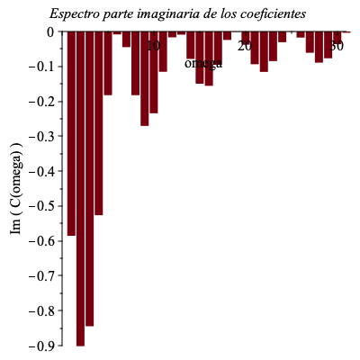 |
Nóte la riqueza de esta expansión comparada con la expansión con la expansión con la etiqueta n
Espectro de los módulos de los coeficientes
| > | display(PowCK,title=`Espectro módulo de los coeficientes`, labels=["omega","Abs ( C(omega) )"], labeldirections= ["horizontal","vertical"]); |
| 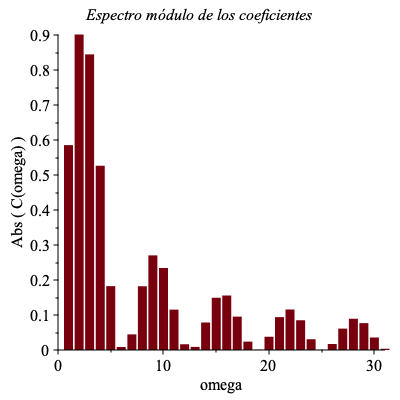 |
Función Onda cuadrada en el intervalo [ 0, T]
| > | t0:=0: t1:=T: fOndaCuadrada2:=piecewise((t0<=t and t<T/2,-1),(T/2<=t and t<=t1,1)); |
| 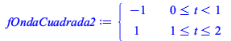 | (4.1) |
La graficamos
| > | plot(fOndaCuadrada2,t=t0-2..t1+2); |
| 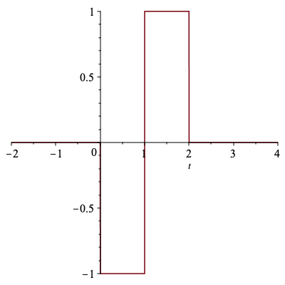 |
Su transformada
| > | TFOndaCuadrada2 := FourierCompTranf(fOndaCuadrada2); |
| 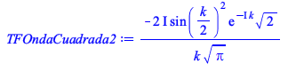 | (4.2) |
En este caso la tranformada de fourier de la onda cuadrada desplazada tiene componentes realies e imaginarias
Al graficar la señal y su transformada tenemos
| > | plot(fOndaCuadrada2,t=-8..8,title="Señal");
plot([Re(TFOndaCuadrada2),Im(TFOndaCuadrada2)],k=-16..16,color=[red,blue], title ="Transformada de Fourier F(w)= A(w) + iB(w)",legend=[`A(w)`,`B(w)`]); plot(abs(TFOndaCuadrada2),k=-16..16, title="Espectro de potencia"); |
| 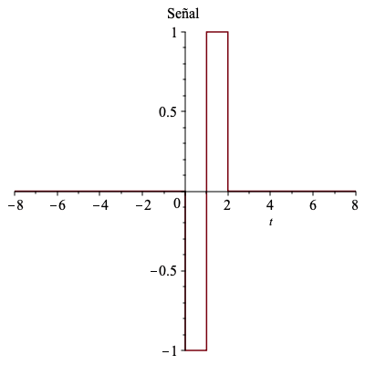 | |
| 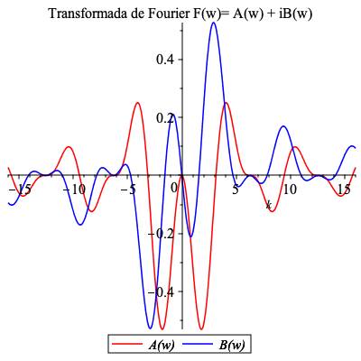 | |
Note que, para este caso tendremos componentes complejas y reales. Además el espectro de potencias coincide con el del caso anterior
Expansión en series de Fourier complejas
Que pasa si expandimos la función en término de una serie compleja de Fourier
| > | SerieFourierExp := (m,t)-> sum(C[j]*exp(-I*(n*2*Pi/T)*t),j=1..m); |
![SerieFourierExp := proc (m, t) options operator, arrow; sum(`*`(C[j], `*`(exp(`+`(`-`(`/`(`*`(`+`(`*`(2, `*`(I))), `*`(n, `*`(Pi, `*`(t)))), `*`(T))))))), j = 1 .. m) end proc](images/FourierTransf_54.gif) |
(4.1.1) |
Calculamos los coeficientes suponiendo que la función anterior es
| > | for n from 0 to N do
C[n]:=2/T*int(fOndaCuadrada2*exp(-I*(n*2*Pi/T)*t),t=t0..t1): PowerC[n]:=abs(C[n]); od: |
Pero estos coeficientes pueden ser reales o complejos
| > | CoefExp := {seq([n,C[n]], n=0..N)}; #los coeficientes
PowerCoefExp := {seq([n,PowerC[n]], n=0..N)}; # el módulo de los coeficientes |
Tenemos C[n] imaginarios puros
| > | ImCn := [seq(plot([[n,0],[n,Im(C[n])]],thickness=9),n=0..N)]:
PowerCn := [seq(plot([[n,0],[n,PowerC[n]]],thickness=9),n=0..N)]: |
Por lo tanto al graficar la parte imaginaria, obtenemos
| > | display(ImCn,title=`Espectro parte imaginaria de los coeficientes`, labels=["n","Im ( C(n) )"], labeldirections= ["horizontal","vertical"]); |
Obviamente tendremos el mismo espectro de los módulos de los coeficientes
| > | display(PowerCn,title=`Espectro de módulos`, labels=["n","Mod ( C(n) )"], labeldirections= ["horizontal","vertical"]); |
Al hacer el cambio de variable omega = 2*n*Pi/T podremos expandir la serie en función de las frecuencias
| > | SerieFourierExpK := (m,t)-> sum(CK[omega]*exp(-I*omega*t),omega=1..m); |
| > | omegaMax := floor(2*N*Pi/T) |
| > | for omega from 0 to omegaMax do
CK[omega]:=(2/Pi)*int(fOndaCuadrada2*exp(-I*omega*t),t=t0..t1): PowerCK[omega] := evalf(abs(CK[omega])): od: |
En este caso, para esta expansión tendremos coeficientes reales e imaginarios Para graficarlos, calculamos sus partes reales e imaginarias
| > | ImCK := [seq(plot( [[omega,0],[omega,Im(CK[omega])]],thickness=9),omega=0..omegaMax)]:
ReCK := [seq(plot( [[omega,0],[omega,Re(CK[omega])]],thickness=9),omega=0..omegaMax)]: PowCK := [seq(plot( [[omega,0],[omega, PowerCK[omega]]],thickness=9),omega=0..omegaMax)]: |
Nóte la riqueza de esta expansión comparada con la expansión con la expansión con la etiqueta n
Los coeficientes serán: la parte real
| > | display(ReCK,title=`Espectro parte real de los coeficientes`, labels=["omega","Re ( C(omega) )"], labeldirections= ["horizontal","vertical"]); |
| > | display(ImCK,title=`Espectro parte imaginaria de los coeficientes`, labels=["omega","Im ( C(omega) )"], labeldirections= ["horizontal","vertical"]); |
Nóte la riqueza de esta expansión comparada con la expansión con la expansión con la etiqueta n
Espectro de los módulos de los coeficientes
| > | display(PowCK,title=`Espectro módulo de los coeficientes`, labels=["omega","Abs ( C(omega) )"], labeldirections= ["horizontal","vertical"]); |
Diente de sierra impar desplazada en el intervalo [ -T/2, T/2]
| > | t0:=-T/2: t1:=T/2: fDienteSierra:= piecewise((t0<=t and t<t1,3*t)); |
La graficamos
| > | plot(fDienteSierra,t=t0-2..t1+2); |
Calculo la transformada de Fourier
| > | TFfDienteSierra := FourierCompTranf(fDienteSierra); |
Otra vez, tendremos coeficientes reales y complejos y cuando grafico, la señal, su parte real, imaginaria y el espectro de potencia de de su transformada
| > | plot(fDienteSierra,t=-8..8,title="Señal");
plot([Re(TFfDienteSierra),Im(TFfDienteSierra)],k=-16..16,color=[red,blue], title ="F(w)= A(w) + iB(w)",legend=[`A(w)`,`B(w)`]); plot(abs(TFfDienteSierra),k=-16..16, title="Espectro de potencia F(w)"); |
Expansión en series de Fourier complejas
Que pasa si expandimos la función en término de una serie compleja de Fourier
| > | SerieFourierExp := (m,t)-> sum(C[j]*exp(-I*(n*2*Pi/T)*t),j=1..m); |
Calculamos los coeficientes suponiendo que la función anterior es
| > | for n from 0 to N do
C[n]:=2/T*int(fDienteSierra*exp(-I*(n*2*Pi/T)*t),t=t0..t1): PowerC[n]:=abs(C[n]); od: |
Pero estos coeficientes pueden ser reales o complejos
| > | CoefExp := {seq([n,C[n]], n=0..N)}; #los coeficientes
PowerCoefExp := {seq([n,PowerC[n]], n=0..N)}; # el módulo de los coeficientes |
y calculamos la parte real e imaginaria de cada coeficiente
| > | ImCn := [seq(plot([[n,0],[n,Im(C[n])]],thickness=9),n=1..N)]:
ReCn:= [seq(plot([[n,0],[n,Re(C[n])]],thickness=9),n=1..N)]: PowerCn := [seq(plot([[n,0],[n,PowerC[n]]],thickness=9),n=1..N)]: |
Una vez más y como era de esperarse, porque la función es impar, tendremos únicamente coeficiente imaginarios puros
| > | display(ImCn,title=`Espectro parte imaginaria de los coeficientes`, labels=["n","Im ( C(n) )"], labeldirections= ["horizontal","vertical"]); |
Espectro de los módulos de los coeficientes
| > | display(PowerCn,title=`Espectro de módulos`, labels=["n","Mod ( C(n) )"], labeldirections= ["horizontal","vertical"]); |
Al hacer el cambio de variable omega = 2*n*Pi/T podremos expandir la serie en función de las frecuencias
| > | SerieFourierExpK := (m,t)-> sum(CK[omega]*exp(-I*omega*t),omega=1..m); |
| > | omegaMax := floor(2*N*Pi/T) |
| > | for omega from 0 to omegaMax do
CK[omega]:=(2/Pi)*int(fDienteSierra*exp(-I*omega*t),t=t0..t1): PowerCK[omega] := evalf(abs(CK[omega])): od: |
En este caso, para esta expansión tendremos coeficientes reales e imaginarios Para graficarlos, calculamos sus partes reales e imaginarias
| > | ImCK := [seq(plot( [[omega,0],[omega,Im(CK[omega])]],thickness=9),omega=0..omegaMax)]:
ReCK := [seq(plot( [[omega,0],[omega,Re(CK[omega])]],thickness=9),omega=0..omegaMax)]: PowCK := [seq(plot( [[omega,0],[omega, PowerCK[omega]]],thickness=9),omega=0..omegaMax)]: |
Nóte la riqueza de esta expansión comparada con la expansión con la expansión con la etiqueta n
Como en el caso anterior únicamente tendremos coeficientes imaginarios puros
| > | display(ImCK,title=`Espectro parte imaginaria de los coeficientes`, labels=["omega","Im ( C(omega) )"], labeldirections= ["horizontal","vertical"]); |
Nóte la riqueza de esta expansión comparada con la expansión con la expansión con la etiqueta n
Espectro de los módulos de los coeficientes
| > | display(PowCK,title=`Espectro módulo de los coeficientes`, labels=["omega","Abs ( C(omega) )"], labeldirections= ["horizontal","vertical"]); |
Diente de sierra impar en el intervalo [ 0, T]
| > | t0:=0: t1:=T: fDienteSierra2:=piecewise((t0<=t and t<t1,3*t-3)); |
La graficamos
| > | plot(fDienteSierra2,t=t0-2..t1+2); |
Calculo la transformada de Fourier
| > | TFfDienteSierra2 := FourierCompTranf(fDienteSierra2); |
Grafico, la señal y la parte imaginaria de su transformada
| > | plot(fDienteSierra2,t=-8..8,title="Señal");
plot([Re(TFfDienteSierra2),Im(TFfDienteSierra2)],k=-16..16,color=[red,blue], title ="F(w)= A(w) + iB(w)",legend=[`A(w)`,`B(w)`]); plot(abs(TFfDienteSierra2),k=-16..16, title="Espectro de potencia"); |
Expansión en series de Fourier complejas
Que pasa si expandimos la función en término de una serie compleja de Fourier
| > | SerieFourierExp := (m,t)-> sum(C[j]*exp(-I*(n*2*Pi/T)*t),j=1..m); |
Calculamos los coeficientes suponiendo que la función anterior es
| > | for n from 0 to N do
C[n]:=2/T*int(fDienteSierra2*exp(-I*(n*2*Pi/T)*t),t=t0..t1): PowerC[n]:=abs(C[n]); od: |
Pero estos coeficientes pueden ser reales o complejos
| > | CoefExp := {seq([n,C[n]], n=0..N)}; #los coeficientes
PowerCoefExp := {seq([n,PowerC[n]], n=0..N)}; # el módulo de los coeficientes |
y calculamos la parte real e imaginaria de cada coeficiente
| > | ImCn := [seq(plot([[n,0],[n,Im(C[n])]],thickness=9),n=1..N)]:
ReCn:= [seq(plot([[n,0],[n,Re(C[n])]],thickness=9),n=1..N)]: PowerCn := [seq(plot([[n,0],[n,PowerC[n]]],thickness=9),n=1..N)]: |
Solo tendremos parte imaginaria
| > | display(ImCn,title=`Espectro parte imaginaria de los coeficientes`, labels=["n","Im ( C(n) )"], labeldirections= ["horizontal","vertical"]); |
Espectro de los módulos de los coeficientes
| > | display(PowerCn,title=`Espectro de módulos`, labels=["n","Mod ( C(n) )"], labeldirections= ["horizontal","vertical"]); |
Al hacer el cambio de variable omega = 2*n*Pi/T podremos expandir la serie en función de las frecuencias
| > | SerieFourierExpK := (m,t)-> sum(CK[omega]*exp(-I*omega*t),omega=1..m); |
| > | omegaMax := floor(2*N*Pi/T) |
| > | for omega from 0 to omegaMax do
CK[omega]:=(2/Pi)*int(fDienteSierra2*exp(-I*omega*t),t=t0..t1): PowerCK[omega] := evalf(abs(CK[omega])): od: |
En este caso, para esta expansión tendremos coeficientes reales e imaginarios Para graficarlos, calculamos sus partes reales e imaginarias
| > | ImCK := [seq(plot( [[omega,0],[omega,Im(CK[omega])]],thickness=9),omega=0..omegaMax)]:
ReCK := [seq(plot( [[omega,0],[omega,Re(CK[omega])]],thickness=9),omega=0..omegaMax)]: PowCK := [seq(plot( [[omega,0],[omega, PowerCK[omega]]],thickness=9),omega=0..omegaMax)]: |
Nóte la riqueza de esta expansión comparada con la expansión con la expansión con la etiqueta n
Los coeficientes serán: la parte real
| > | display(ReCK,title=`Espectro parte real de los coeficientes`, labels=["omega","Re ( C(omega) )"], labeldirections= ["horizontal","vertical"]); |
| > | display(ImCK,title=`Espectro parte imaginaria de los coeficientes`, labels=["omega","Im ( C(omega) )"], labeldirections= ["horizontal","vertical"]); |
Nóte la riqueza de esta expansión comparada con la expansión con la expansión con la etiqueta n
Espectro de los módulos de los coeficientes
| > | display(PowCK,title=`Espectro módulo de los coeficientes`, labels=["omega","Abs ( C(omega) )"], labeldirections= ["horizontal","vertical"]); |
Propiedades
transformada de una derivada
| > | FourierCompTranf(diff(EFE(t),t)); |
Teorema de Parseval
| > | int(abs(fDienteSierra)^2,t=-infinity..infinity)
;int(abs(TFfDienteSierra)^2,k=-infinity..infinity); |
| > | int(abs(fDienteSierra2)^2,t=-infinity..infinity);
int(abs(TFfDienteSierra2)^2,k=-infinity..infinity); |